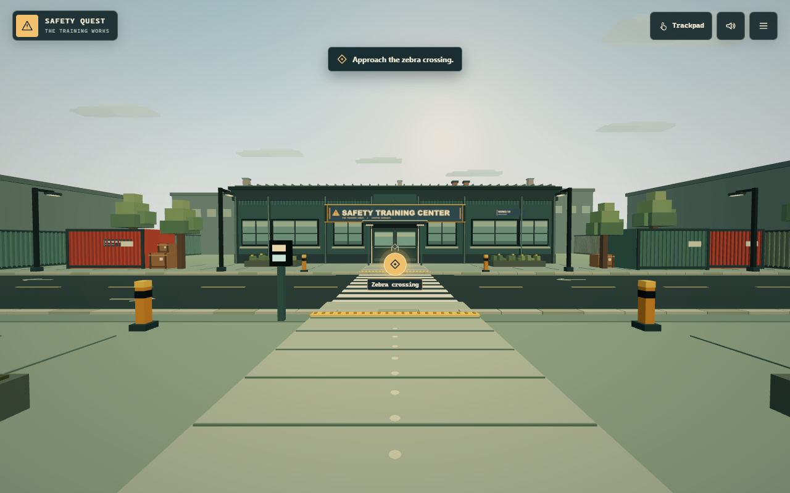

Independent concept · Aulia Ilham Nur Alfian
Safety Quest — Reimagining Manufacturing Safety Training Through Interactive Learning
A browser-based, first-person safety training prototype designed to make workplace safety scenarios more accessible, observable, and engaging.

Overview
Safety Quest puts learners in a fictional manufacturing facility. They cross a road, select suitable PPE, inspect presses, report a defect, document their work, and handle a suspicious email. Short incidents connect unsafe choices with consequences and feedback.
Background & Inspiration
During my internship at PT Panasonic Manufacturing Indonesia, I worked on Etrained, an employee training administration system. Exposure to training workflows prompted me to explore reusable, self-paced preparation for recurring onboarding. Safety Quest is a later, self-initiated concept separate from that internship work.
The Design Opportunity
How might we make introductory manufacturing safety training more accessible, repeatable, and engaging for new personnel without requiring everyone to use specialized hardware or attend every preliminary learning activity in person?
New hires, interns, and temporary personnel may arrive in waves and bring different levels of factory familiarity. Scheduling instructors and repeating introductory material can create friction. Passive materials can present rules, while a simulation can give learners a place to practice applying them. These were design hypotheses, and practical judgment still requires supervised workplace experience.
Target Users
New hires, interns, and temporary workers who are unfamiliar with manufacturing environments. Training coordinators could share a consistent introduction before supervised, site-specific instruction.
Goals & Constraints
Make hazards observable and decisions actionable from a shared link. Support desktop and portrait touch navigation on compatible browsers. Keep professional information available directly through the portfolio and game menus.
UX Decisions
First-person observation
A worker-like viewpoint situates controls and hazards in the space where decisions happen. Learners walk around the equipment and demonstrate actions that a written answer alone cannot show. The exploratory setting is intended to make scenarios memorable.
Browser delivery
A link removes the need for a traditional installation. Static hosting keeps prototype infrastructure simple, and portrait controls reduce reliance on a keyboard and mouse.
A portable clipboard
Matching inspection steps connect guidance to the clipboard. The game tracks physical actions separately from manual entries, so the review can flag omitted or inaccurate records. This lets learners practice documentation in context.
Functional before defective
Press A establishes a reference for intact guarding, controls, and the simulated cycle. Press B asks learners to compare conditions, recognize a visible obstruction, and report and tag the defect while keeping clear.
Consequences with retries
Brief voxel incidents show cause and effect without physical danger. The follow-up explains the decision and restores a nearby checkpoint so the learner can try again.
Interaction & Learning Flow
- Observe traffic and cross at the pedestrian crossing.
- Collect the clipboard, inspect PPE, and collect the out-of-service tag.
- Practice external inspection and a supervised-style simulated cycle on functional Press A.
- Identify and report the defect on Press B. Attach the tag and document the work.
- Respond to a phishing scenario at the retro workstation and reconcile the clipboard with actions performed.
Technical Implementation
React and TypeScript run the interface and simulation state. Three.js and React Three Fiber render the factory. Navigation checks collisions, Web Audio drives cues, and browser localStorage keeps checkpoint progress. Vite builds the static game for GitHub Pages.
Challenges & Trade-offs
A continuous room preserves spatial context but makes the next action easier to miss. Subtle highlights point to physical controls. Simplified machinery and low-poly assets keep the scene practical to render while leaving room for recognizable controls and guarding.
Prototype Limitations
The initial load requires a network connection and the game requires WebGL support. Performance varies by device. Enterprise use would require additional infrastructure, accessibility validation, and qualified review against site procedures. The simulated STOP checks and out-of-service tag do not verify energy isolation. Safety Quest provides no workplace certification, and its learning outcomes have yet to be measured.
What I Would Validate Next
- First-time task completion and hazard identification accuracy
- Time to locate important controls and frequency of mobile interaction errors
- Learner comprehension after the session
- Performance across supported desktop and mobile devices